El contexto
El producto fue diseñado para un Comité Directivo que necesitaba consultar información corporativa de forma rápida y centralizada. El desafío era transformar documentación extensa en respuestas claras y contextualizadas mediante IA conversacional.
La información estaba disponible, pero acceder a ella seguía siendo lento.
La documentación corporativa crecía, pero acceder a información relevante seguía requiriendo tiempo y esfuerzo.
Qué buscaba resolver
Necesitaba diseñar una experiencia mobile que permitiera consultar información corporativa de forma rápida, clara y contextualizada mediante IA.
Cómo lo resolví
Un sistema de consultas, contexto y fuentes.
La experiencia se diseñó para convertir documentación corporativa en información accesible mediante consultas simples, manteniendo siempre visible el contexto utilizado por la IA.
Una experiencia simple para consultar información compleja.
La interfaz prioriza claridad, baja fricción y contexto visible para que los usuarios puedan consultar información corporativa sin necesidad de recorrer manualmente la documentación.
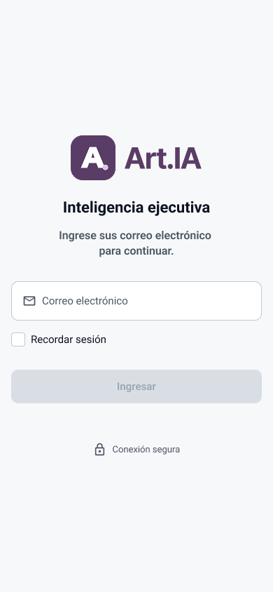
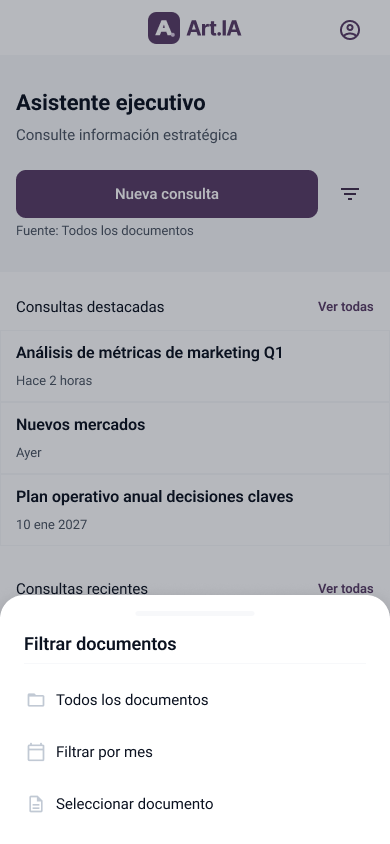
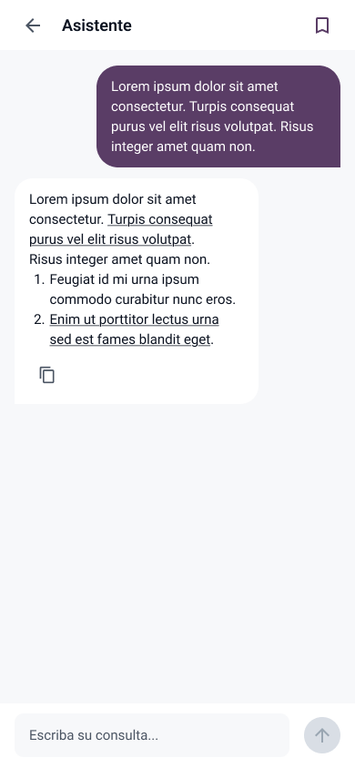
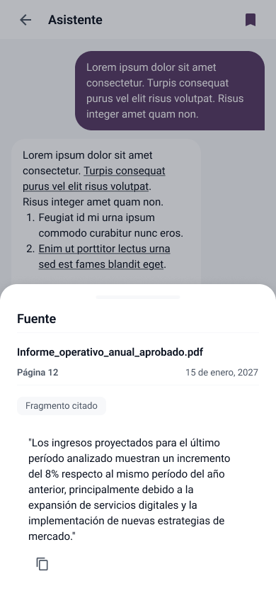
Todo empieza desde un mismo lugar. Nueva consulta, fuente activa y accesos a consultas destacadas y recientes.
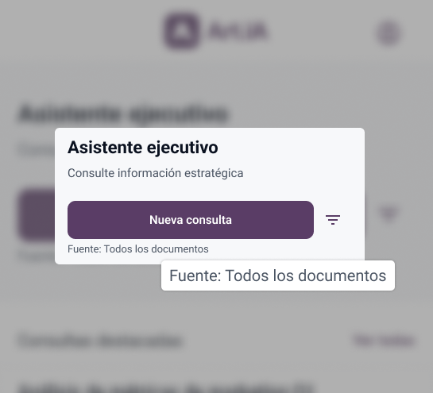
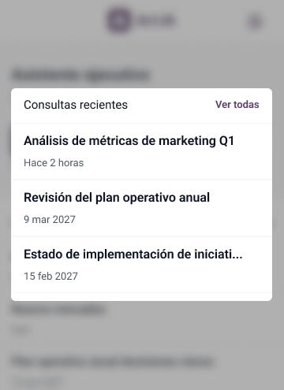
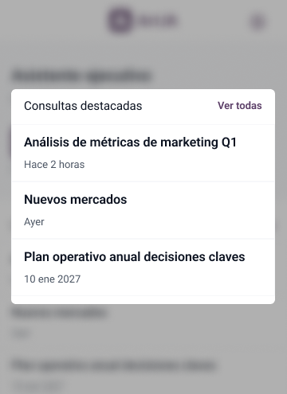
Definir el contexto antes de preguntar. El usuario puede consultar todos los documentos, filtrar por período o seleccionar una fuente específica.
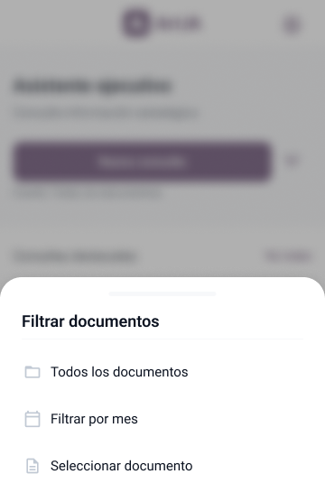
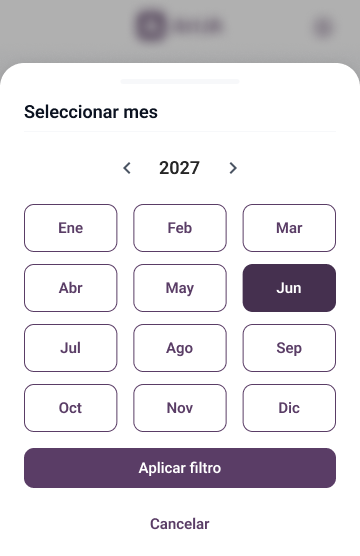
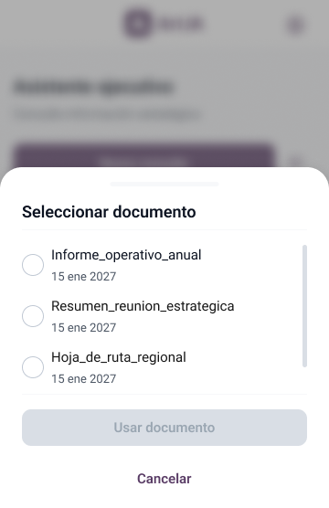
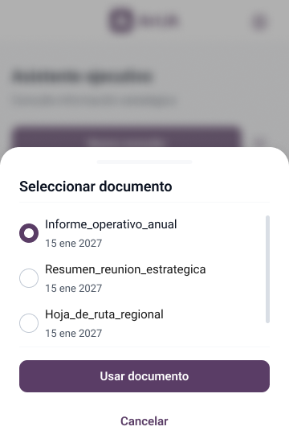
Preguntar como en una conversación. Una interfaz simple permite consultar información y seguir el proceso de generación de la respuesta.
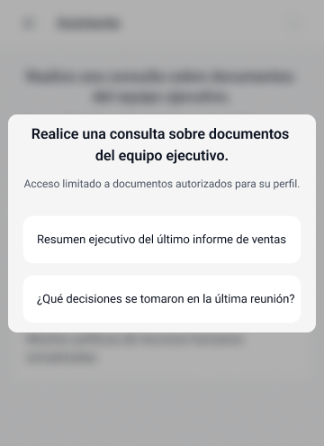
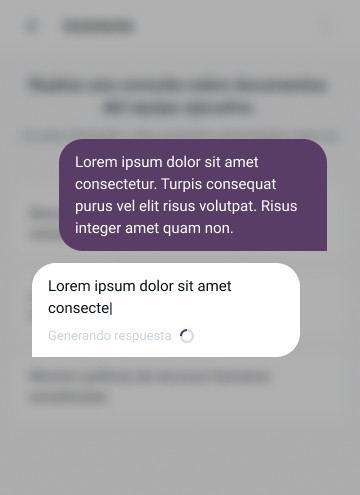
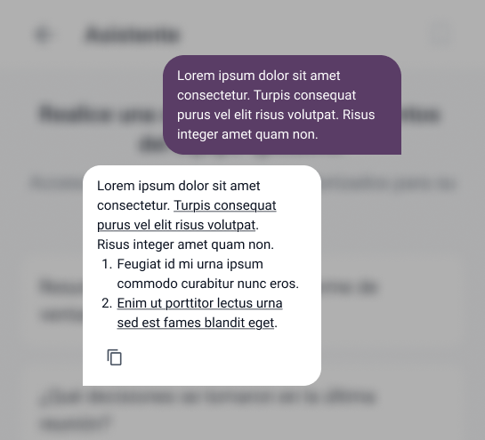
Entender de dónde viene la respuesta. Las fuentes utilizadas permanecen accesibles para aportar contexto y respaldo a la información.
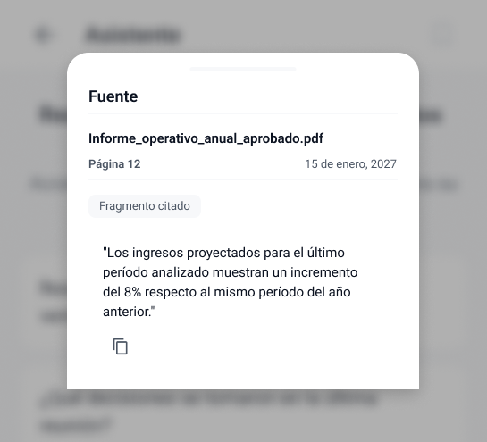
Una interfaz consistente, escalable y preparada para desarrollo.
La interfaz se construyó sobre componentes reutilizables y patrones consistentes, contemplando los distintos estados necesarios para una experiencia mobile clara y predecible.
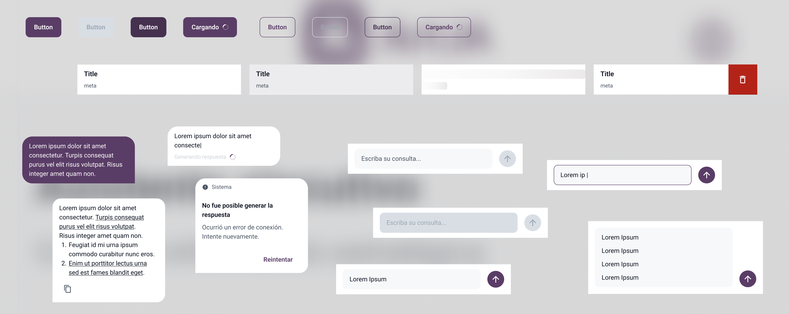
Información más accesible para decisiones más ágiles.
Una experiencia diseñada para reducir la fricción al consultar información corporativa.
Equipo y rol
El caso utiliza branding, colores, nombres y contenido ficticio/adaptado para proteger información confidencial del cliente.
Prototipo funcional
El prototipo permite recorrer los principales flujos de la experiencia: nueva consulta, selección de fuente, respuesta de la IA y revisión de las fuentes citadas.